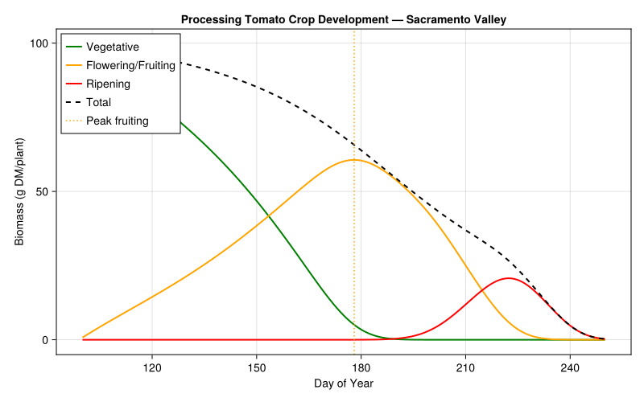
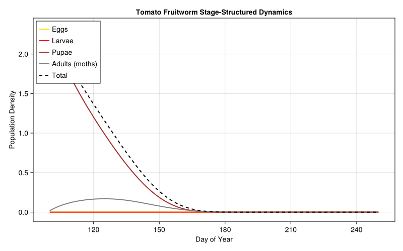
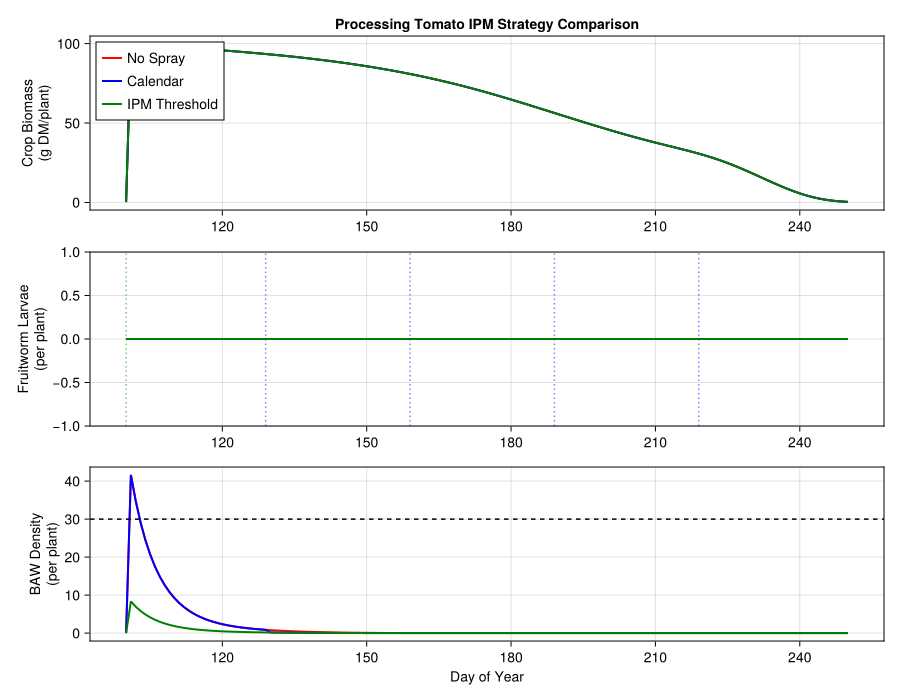
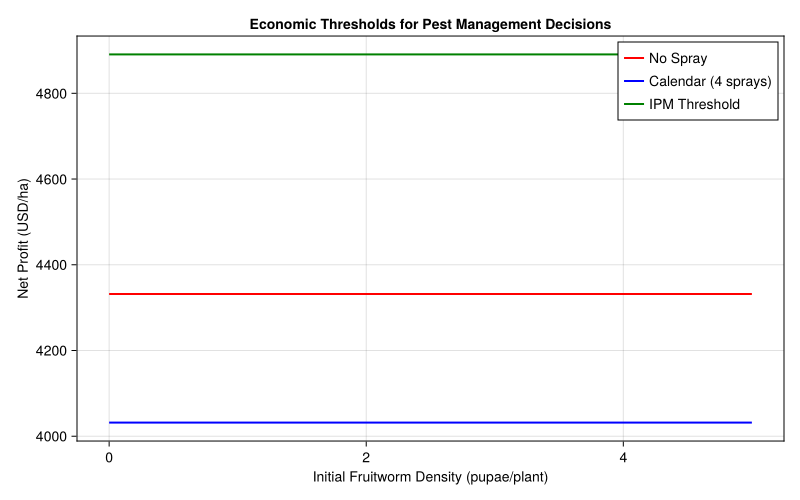
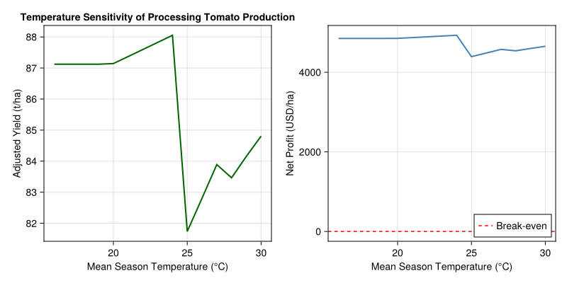

Processing Tomato Crop-Pest Management
Simon Frost
- Introduction
- Setup
- 1. Processing Tomato Crop Model
- 2. Tomato Fruitworm Pest Model
- 3. Damage Functions and Yield Loss
- 4. Economic Analysis
- 5. Integrated Simulation: Comparing IPM Strategies (Coupled API)
- 6. Sensitivity to Pest Pressure
- 7. Temperature Sensitivity Analysis
- 8. Discussion
- Parameter Sources
Primary reference: (Wilson and Zalom 1986).
Introduction
California’s Central Valley produces over 95% of the processing tomatoes grown in the United States, with an annual farm-gate value exceeding $1 billion. Unlike fresh-market tomatoes, processing tomatoes (Solanum lycopersicum) are bred for once-over mechanical harvest — meaning the entire crop must mature synchronously and maintain high soluble solids content for paste, sauce, and canned product manufacturing.
The key pests of processing tomatoes in California are the tomato fruitworm (Helicoverpa zea (Boddie), also known as corn earworm) and the beet armyworm (Spodoptera exigua Hübner). Fruitworm larvae bore into developing fruit, causing direct yield loss and quality downgrading. Beet armyworm larvae feed on foliage and can damage fruit, with their impact on the crop integrated through the metabolic supply–demand balance (Wilson et al. 1986, §2.2).
Wilson and colleagues developed TOMSIM, a physiologically based demographic model coupling:
- Tomato crop growth: Temperature-driven phenology via degree-day accumulation, with a metabolic pool model for carbon allocation among leaves, stems, roots, and fruit. Heat-induced flower abortion above 32 °C delays maturity.
- Tomato fruitworm dynamics: Stage-structured population model (egg → larva → pupa → adult) interacting with the crop through fruit predation using supply/demand functional responses.
- Beet armyworm dynamics: Similarly structured population model interacting with the crop through foliage and fruit feeding damage (Wilson et al. 1986, §2.2).
- Pest management decision support: Time-varying economic thresholds for pesticide application that account for crop growth stage, pest density, and the relative cost of treatment versus expected yield loss.
This vignette reconstructs TOMSIM’s core logic using the PhysiologicallyBasedDemographicModels.jl framework and uses it to compare three IPM strategies — calendar spray, threshold-based treatment, and no spray — evaluating yield, fruit quality, and profitability outcomes.
References:
- Wilson LT, Zalom FG (1986) TOMDAT: Tomato forecasting and data collection. Regents Univ. Calif.
- Wilson LT, Barnett WW (1983) Degree-days: an aid in crop and pest management. Calif. Agric. 37:4–7
- Gutierrez AP, Schulthess F, Wilson LT, Villacorta AM, Ellis CK, Baumgaertner JU
- Energy acquisition and allocation in plants and insects. Can. Entomol.
- Warnock SJ, Isaac RL (1969) A linear heat unit system for tomatoes in California. J. Amer. Soc. Hort. Sci. 677–678
- Rudich J, Jamski E, Regev Y (1977) Genotypic variation for sensitivity to high temperature in the tomato: Pollination and fruit set. Bot. Gaz. 138:448–452
Setup
using PhysiologicallyBasedDemographicModels
using CairoMakie1. Processing Tomato Crop Model
Processing tomato development in California follows a linear heat-unit model. Wilson and Zalom (1986) report crop maturity ranging from 780–1300 degree-days above a 12 °C base threshold from emergence, with the wide range largely due to heat-induced abscission (Wilson et al. 1986, §3.3). Wilson and Barnett (1983) describe the general degree-day framework used in TOMSIM.
The original TOMSIM models four parallel subpopulations (fruit, leaves, roots, stems) linked via a single metabolic pool (§2.1.1). For this simplified reconstruction, we model the crop as a three-stage sequential system using distributed delays: a vegetative phase (transplant to first flower, ~280 DD), a flowering/fruiting phase (first flower to breaker fruit, ~500 DD), and a ripening phase (breaker to harvest-ripe, ~260 DD), totaling ~1040 DD (base 12 °C) — the midpoint of the 780–1300 DD range reported by Wilson and Zalom (1986).
## --- Crop thermal parameters (Wilson et al. 1986, §3.3; Wilson & Barnett 1983) ---
const TOMATO_BASE_TEMP = 12.0 # °C; paper §3.3: ">12°C"
const TOMATO_UPPER_TEMP = 35.0 # °C; assumed upper cutoff (Warnock & Isaac 1969)
## --- Crop phenology: degree-day requirements (base 12°C) ---
# Total maturity: 780–1300 DD (paper §3.3); midpoint ≈ 1040 DD
# Stage breakdown is assumed — paper gives only the total range
const VEG_DD = 280.0 # DD transplant→first flower (assumed)
const FRUIT_DD = 500.0 # DD first flower→breaker (assumed)
const RIPEN_DD = 260.0 # DD breaker→harvest-ripe (assumed)
## --- Distributed delay substages (assumed) ---
const VEG_K = 20 # substages for vegetative phase
const FRUIT_K = 25 # substages for flowering/fruiting phase
const RIPEN_K = 15 # substages for ripening phase
## --- Crop mortality rates (assumed) ---
const VEG_MORT = 0.001 # daily vegetative mortality rate
const FRUIT_MORT = 0.002 # daily fruiting mortality rate
const RIPEN_MORT = 0.001 # daily ripening mortality rate
## --- Initial conditions (assumed) ---
const TRANSPLANT_BIOMASS = 5.0 # g DM/plant at transplanting
# Processing tomato development rate
tomato_dev = LinearDevelopmentRate(TOMATO_BASE_TEMP, TOMATO_UPPER_TEMP)
# Vegetative stage: ~280 DD transplant to first flower
veg_delay = DistributedDelay(VEG_K, VEG_DD; W0=TRANSPLANT_BIOMASS)
veg_stage = LifeStage(:vegetative, veg_delay, tomato_dev, VEG_MORT)
# Flowering/fruiting stage: ~500 DD first flower to breaker
fruit_delay = DistributedDelay(FRUIT_K, FRUIT_DD; W0=0.0)
fruit_stage = LifeStage(:fruiting, fruit_delay, tomato_dev, FRUIT_MORT)
# Ripening stage: ~260 DD breaker to harvest-ripe
ripen_delay = DistributedDelay(RIPEN_K, RIPEN_DD; W0=0.0)
ripen_stage = LifeStage(:ripening, ripen_delay, tomato_dev, RIPEN_MORT)
tomato = Population(:processing_tomato, [veg_stage, fruit_stage, ripen_stage])
println("Processing tomato crop model:")
println(" Stages: $(n_stages(tomato))")
println(" Total substages: $(n_substages(tomato))")
println(" Initial biomass: $(total_population(tomato)) g DM/plant")
println(" Base temperature: $(TOMATO_BASE_TEMP) °C (paper §3.3)")
println(" Veg DD requirement: $(VEG_DD) DD (base $(TOMATO_BASE_TEMP)°C)")
println(" Fruit DD: $(FRUIT_DD) DD")
println(" Ripen DD: $(RIPEN_DD) DD")
println(" Total DD to harvest: $(VEG_DD + FRUIT_DD + RIPEN_DD) DD")
println(" Paper range: 780–1300 DD (§3.3)")Processing tomato crop model:
Stages: 3
Total substages: 60
Initial biomass: 100.0 g DM/plant
Base temperature: 12.0 °C (paper §3.3)
Veg DD requirement: 280.0 DD (base 12.0°C)
Fruit DD: 500.0 DD
Ripen DD: 260.0 DD
Total DD to harvest: 1040.0 DD
Paper range: 780–1300 DD (§3.3)Temperature response
The linear heat-unit model clips development outside the 12–35 °C thermal window. In the Sacramento Valley, daily mean temperatures during the April–September growing season typically range from 15 °C to 30 °C, accumulating 8–18 DD per day during peak summer (base 12 °C).
println("\n--- Tomato Development Rate vs Temperature ---")
println("Temp (°C) | Degree-Days/day")
println("-" ^ 30)
for T in [5.0, 10.0, 15.0, 20.0, 25.0, 30.0, 32.0, 35.0, 38.0]
dd = degree_days(tomato_dev, T)
println(" $(lpad(string(T), 5)) | $(lpad(string(round(dd, digits=1)), 10))")
end--- Tomato Development Rate vs Temperature ---
Temp (°C) | Degree-Days/day
------------------------------
5.0 | 0.0
10.0 | 0.0
15.0 | 3.0
20.0 | 8.0
25.0 | 13.0
30.0 | 18.0
32.0 | 20.0
35.0 | 23.0
38.0 | 26.0Heat-induced flower abortion
Wilson and Zalom (1986) found that crop maturity is delayed when daily maximum temperature exceeds ~32 °C, due to heat-induced abortion of flowering structures. Rudich et al. (1977) showed this is primarily a pollen viability effect. We incorporate this as a stress factor applied to the fruiting stage.
## --- Heat stress parameters (Wilson et al. 1986, §2.1.7) ---
const HEAT_ABORT_THRESHOLD = 32.0 # °C; paper §2.1.7: "daily maximum temperature exceeded ca. 32°C"
const HEAT_ABORT_SLOPE = 0.05 # stress rate per °C above threshold (assumed; paper cites Rudich et al. 1977)
"""
heat_abortion_stress(T_max; threshold=HEAT_ABORT_THRESHOLD, slope=HEAT_ABORT_SLOPE)
Compute heat-induced flower/fruit abortion stress (Wilson et al. 1986, §2.1.7).
Returns a stress rate (0 = no stress) that increases linearly above the threshold.
Based on Wilson & Zalom (1986) finding that maturity is delayed when T_max > ~32°C,
and Rudich et al. (1977) pollen viability data.
"""
function heat_abortion_stress(T_max; threshold=HEAT_ABORT_THRESHOLD, slope=HEAT_ABORT_SLOPE)
T_max <= threshold && return 0.0
return slope * (T_max - threshold)
end
println("\n--- Heat Stress on Fruiting ---")
println("T_max (°C) | Abortion Stress Rate")
println("-" ^ 35)
for T_max in [28.0, 30.0, 32.0, 34.0, 36.0, 38.0, 40.0]
stress = heat_abortion_stress(T_max)
println(" $(lpad(string(T_max), 8)) | $(lpad(string(round(stress, digits=3)), 12))")
end--- Heat Stress on Fruiting ---
T_max (°C) | Abortion Stress Rate
-----------------------------------
28.0 | 0.0
30.0 | 0.0
32.0 | 0.0
34.0 | 0.1
36.0 | 0.2
38.0 | 0.3
40.0 | 0.4Simulating the growing season
We use sinusoidal weather representing California’s Sacramento Valley: mean temperature ~22 °C with 8 °C seasonal amplitude, peaking in late July (~day 200). Processing tomatoes are transplanted in April (day ~100) and harvested in August–September (day ~250).
# Sacramento Valley weather
weather = SinusoidalWeather(22.0, 8.0; phase=200.0, radiation=25.0)
# Transplant day 100 (early April), harvest day 250 (early September)
println("Season temperatures (Sacramento Valley):")
for d in [100, 130, 160, 190, 220, 250]
w = get_weather(weather, d)
println(" Day $(lpad(string(d), 3)): T_mean = $(round(w.T_mean, digits=1)) °C")
endSeason temperatures (Sacramento Valley):
Day 100: T_mean = 14.1 °C
Day 130: T_mean = 14.5 °C
Day 160: T_mean = 16.9 °C
Day 190: T_mean = 20.6 °C
Day 220: T_mean = 24.7 °C
Day 250: T_mean = 28.1 °C# Simulate 150-day growing season (April transplant through September harvest)
prob = PBDMProblem(tomato, weather, (100, 250))
sol = solve(prob, DirectIteration())
cdd = cumulative_degree_days(sol)
veg_traj = stage_trajectory(sol, 1)
fruit_traj = stage_trajectory(sol, 2)
ripen_traj = stage_trajectory(sol, 3)
println("\n--- 150-Day Growing Season Summary ---")
println("Total degree-days accumulated: $(round(cdd[end], digits=0))")
println("Phenology (50% maturation): day $(phenology(sol; threshold=0.5))")
println("Peak vegetative biomass: $(round(maximum(veg_traj), digits=1)) (day $(argmax(veg_traj) + 99))")
println("Peak fruiting biomass: $(round(maximum(fruit_traj), digits=1)) (day $(argmax(fruit_traj) + 99))")
println("Final ripe fruit biomass: $(round(ripen_traj[end], digits=1))")
# Crop trajectory at 25-day intervals
println("\n--- Crop Biomass Trajectory ---")
println("Day | DD (cum) | Vegetative | Fruiting | Ripening | Total")
println("-" ^ 60)
for d_offset in [1, 25, 50, 75, 100, 125, 150]
idx = min(d_offset, length(veg_traj))
cidx = min(d_offset, length(cdd))
tot = veg_traj[idx] + fruit_traj[idx] + ripen_traj[idx]
cal_day = 99 + d_offset
println(" $(lpad(string(cal_day), 3)) | $(lpad(string(round(cdd[cidx], digits=0)), 6)) | $(lpad(string(round(veg_traj[idx], digits=1)), 9)) | $(lpad(string(round(fruit_traj[idx], digits=1)), 7)) | $(lpad(string(round(ripen_traj[idx], digits=1)), 7)) | $(lpad(string(round(tot, digits=1)), 7))")
end--- 150-Day Growing Season Summary ---
Total degree-days accumulated: 1136.0
Phenology (50% maturation): day 233
Peak vegetative biomass: 99.0 (day 100)
Peak fruiting biomass: 60.6 (day 178)
Final ripe fruit biomass: 0.3
--- Crop Biomass Trajectory ---
Day | DD (cum) | Vegetative | Fruiting | Ripening | Total
------------------------------------------------------------
100 | 2.0 | 99.0 | 0.7 | 0.0 | 99.8
124 | 52.0 | 77.3 | 17.2 | 0.0 | 94.5
149 | 126.0 | 48.2 | 37.5 | 0.0 | 85.7
174 | 256.0 | 9.4 | 59.8 | 0.0 | 69.2
199 | 462.0 | 0.0 | 43.2 | 2.8 | 46.1
224 | 752.0 | 0.0 | 4.3 | 20.5 | 24.8
249 | 1120.0 | 0.0 | 0.0 | 0.4 | 0.4Crop development plot
fig_crop = Figure(size=(800, 500))
ax = Axis(fig_crop[1, 1],
xlabel="Day of Year", ylabel="Biomass (g DM/plant)",
title="Processing Tomato Crop Development — Sacramento Valley")
days = 100:250
lines!(ax, days, veg_traj, label="Vegetative", color=:green, linewidth=2)
lines!(ax, days, fruit_traj, label="Flowering/Fruiting", color=:orange, linewidth=2)
lines!(ax, days, ripen_traj, label="Ripening", color=:red, linewidth=2)
total_traj = veg_traj .+ fruit_traj .+ ripen_traj
lines!(ax, days, total_traj, label="Total", color=:black, linewidth=2, linestyle=:dash)
vlines!(ax, [100 + argmax(fruit_traj) - 1], color=:orange, linestyle=:dot,
label="Peak fruiting")
axislegend(ax, position=:lt)
fig_crop
2. Tomato Fruitworm Pest Model
The tomato fruitworm (Helicoverpa zea (Boddie)) is the primary direct pest of processing tomatoes in California (Wilson et al. 1986, §2.2). Moths oviposit on foliage and developing fruit; neonate larvae bore into green and ripening fruit, rendering them unmarketable. In the Sacramento Valley, fruitworm typically produces 2–3 overlapping generations during the tomato season.
TOMSIM uses Manetsch (1976) distributed delays for pest population dynamics, with separate arrays for female and male subpopulations (§2.2). Development is temperature-driven using the degree-day framework of Wilson and Barnett (1983). The base temperature of 12.8 °C for H. zea is from Wilson and Barnett (1983). Specific DD requirements per stage are not given in this paper and are assumed from the general Helicoverpa literature.
## --- Fruitworm thermal parameters ---
const FW_BASE_TEMP = 12.8 # °C; Wilson & Barnett (1983), cited in paper
const FW_UPPER_TEMP = 35.0 # °C; assumed upper cutoff
## --- Fruitworm stage DD requirements (assumed from Helicoverpa literature) ---
const FW_EGG_DD = 50.0 # DD for egg stage (assumed)
const FW_LARVA_DD = 250.0 # DD for larval feeding period (assumed)
const FW_PUPA_DD = 180.0 # DD for pupation (assumed)
const FW_ADULT_DD = 70.0 # DD for adult lifespan (assumed)
## --- Fruitworm distributed delay substages (assumed) ---
const FW_EGG_K = 10
const FW_LARVA_K = 15
const FW_PUPA_K = 12
const FW_ADULT_K = 8
## --- Fruitworm stage mortality rates (assumed) ---
const FW_EGG_MORT = 0.10 # egg predation/parasitism
const FW_LARVA_MORT = 0.05 # larval mortality
const FW_PUPA_MORT = 0.02 # pupal mortality
const FW_ADULT_MORT = 0.04 # adult mortality
# Fruitworm development rate (Wilson & Barnett 1983)
fw_dev = LinearDevelopmentRate(FW_BASE_TEMP, FW_UPPER_TEMP)
# 4-stage lifecycle with distributed delays
fw_egg_delay = DistributedDelay(FW_EGG_K, FW_EGG_DD; W0=0.0)
fw_larva_delay = DistributedDelay(FW_LARVA_K, FW_LARVA_DD; W0=0.0)
fw_pupa_delay = DistributedDelay(FW_PUPA_K, FW_PUPA_DD; W0=0.0)
fw_adult_delay = DistributedDelay(FW_ADULT_K, FW_ADULT_DD; W0=0.0)
fw_egg_stage = LifeStage(:egg, fw_egg_delay, fw_dev, FW_EGG_MORT)
fw_larva_stage = LifeStage(:larva, fw_larva_delay, fw_dev, FW_LARVA_MORT)
fw_pupa_stage = LifeStage(:pupa, fw_pupa_delay, fw_dev, FW_PUPA_MORT)
fw_adult_stage = LifeStage(:adult, fw_adult_delay, fw_dev, FW_ADULT_MORT)
fruitworm = Population(:tomato_fruitworm,
[fw_egg_stage, fw_larva_stage, fw_pupa_stage, fw_adult_stage])
println("Tomato Fruitworm lifecycle model:")
println(" Base temperature: $(FW_BASE_TEMP) °C (Wilson & Barnett 1983)")
println(" Stages: $(n_stages(fruitworm))")
println(" Substages: $(n_substages(fruitworm))")
println(" Egg DD: $(FW_EGG_DD) (assumed)")
println(" Larval DD: $(FW_LARVA_DD) (assumed)")
println(" Pupal DD: $(FW_PUPA_DD) (assumed)")
println(" Adult DD: $(FW_ADULT_DD) (assumed)")
println(" Total DD: $(FW_EGG_DD + FW_LARVA_DD + FW_PUPA_DD + FW_ADULT_DD)")Tomato Fruitworm lifecycle model:
Base temperature: 12.8 °C (Wilson & Barnett 1983)
Stages: 4
Substages: 45
Egg DD: 50.0 (assumed)
Larval DD: 250.0 (assumed)
Pupal DD: 180.0 (assumed)
Adult DD: 70.0 (assumed)
Total DD: 550.0Beet Armyworm Population Model
The beet armyworm (Spodoptera exigua Hübner) is the second pest explicitly modeled in TOMSIM (Wilson et al. 1986, §2.2). Both pest models interact with the crop through fruit predation, with damage integrated via the metabolic supply–demand balance. We model it with a simplified two-stage lifecycle (larva, adult) as the paper does not provide detailed stage structure.
## --- Beet armyworm thermal parameters (assumed) ---
const BAW_BASE_TEMP = 12.0 # °C; assumed (paper does not specify)
const BAW_UPPER_TEMP = 35.0 # °C; assumed
## --- Beet armyworm stage DD requirements (assumed) ---
const BAW_LARVA_DD = 200.0 # DD for larval period (assumed)
const BAW_ADULT_DD = 150.0 # DD for adult lifespan (assumed)
## --- Beet armyworm substages and mortality (assumed) ---
const BAW_LARVA_K = 10
const BAW_ADULT_K = 8
const BAW_LARVA_MORT = 0.08 # larval mortality
const BAW_ADULT_MORT = 0.03 # adult mortality
baw_dev = LinearDevelopmentRate(BAW_BASE_TEMP, BAW_UPPER_TEMP)
baw_larva_delay = DistributedDelay(BAW_LARVA_K, BAW_LARVA_DD; W0=0.0)
baw_adult_delay = DistributedDelay(BAW_ADULT_K, BAW_ADULT_DD; W0=0.0)
baw_larva_stage = LifeStage(:larva, baw_larva_delay, baw_dev, BAW_LARVA_MORT)
baw_adult_stage = LifeStage(:adult, baw_adult_delay, baw_dev, BAW_ADULT_MORT)
beet_armyworm = Population(:beet_armyworm, [baw_larva_stage, baw_adult_stage])
println("\nBeet armyworm population model (paper §2.2):")
println(" Base temperature: $(BAW_BASE_TEMP) °C (assumed)")
println(" Stages: $(n_stages(beet_armyworm))")
println(" Substages: $(n_substages(beet_armyworm))")
println(" Generation: $(BAW_LARVA_DD + BAW_ADULT_DD) DD (base $(BAW_BASE_TEMP)°C)")Beet armyworm population model (paper §2.2):
Base temperature: 12.0 °C (assumed)
Stages: 2
Substages: 18
Generation: 350.0 DD (base 12.0°C)Larval feeding functional response
Fruitworm larval demand for fruit tissue follows a supply–demand functional response (Gutierrez et al. 1986). The paper describes consumption of fruit of different ages as a function of larval density and age class breakdown, and the availability of fruit of different ages (§2.2). We use a Fraser-Gilbert supply-demand model with an assumed search efficiency parameter.
## --- Functional response parameter (assumed) ---
const FW_SEARCH_EFF = 0.4 # Fraser-Gilbert search/interception efficiency (assumed)
# Fraser-Gilbert response for larval feeding on fruit (Gutierrez et al. 1986)
larval_feeding = FraserGilbertResponse(FW_SEARCH_EFF)
println("\n--- Fruitworm Larval Feeding Response ---")
println("Fruit Supply | Larval Demand | Acquired | S/D Ratio")
println("-" ^ 55)
for (supply, demand) in [(500.0, 5.0), (200.0, 20.0), (100.0, 50.0),
(50.0, 50.0), (20.0, 100.0), (5.0, 200.0)]
acq = acquire(larval_feeding, supply, demand)
sdr = supply_demand_ratio(larval_feeding, supply, demand)
println(" $(lpad(string(Int(supply)), 10)) | $(lpad(string(Int(demand)), 11)) | $(lpad(string(round(acq, digits=2)), 7)) | $(lpad(string(round(sdr, digits=3)), 7))")
end--- Fruitworm Larval Feeding Response ---
Fruit Supply | Larval Demand | Acquired | S/D Ratio
-------------------------------------------------------
500 | 5 | 5.0 | 1.0
200 | 20 | 19.63 | 0.982
100 | 50 | 27.53 | 0.551
50 | 50 | 16.48 | 0.33
20 | 100 | 7.69 | 0.077
5 | 200 | 1.99 | 0.01Pest dynamics through the season
We initialize fruitworm with a small overwintering pupal population that produces the first moth flight around day 120 (late April/early May). Beet armyworm colonization begins around day 130 with immigrant moths.
## --- Initial pest densities (assumed) ---
const FW_INITIAL_PUPAE = 0.2 # overwintering pupae per plant (assumed)
const BAW_INITIAL_LARVAE = 5.0 # initial beet armyworm larvae per plant (assumed)
# Initialize pest populations with early-season colonizers
fw_egg_delay_s = DistributedDelay(FW_EGG_K, FW_EGG_DD; W0=0.0)
fw_larva_delay_s = DistributedDelay(FW_LARVA_K, FW_LARVA_DD; W0=0.0)
fw_pupa_delay_s = DistributedDelay(FW_PUPA_K, FW_PUPA_DD; W0=FW_INITIAL_PUPAE)
fw_adult_delay_s = DistributedDelay(FW_ADULT_K, FW_ADULT_DD; W0=0.0)
fw_sim = Population(:fruitworm_sim, [
LifeStage(:egg, fw_egg_delay_s, fw_dev, FW_EGG_MORT),
LifeStage(:larva, fw_larva_delay_s, fw_dev, FW_LARVA_MORT),
LifeStage(:pupa, fw_pupa_delay_s, fw_dev, FW_PUPA_MORT),
LifeStage(:adult, fw_adult_delay_s, fw_dev, FW_ADULT_MORT)
])
fw_prob = PBDMProblem(fw_sim, weather, (100, 250))
fw_sol = solve(fw_prob, DirectIteration())
fw_egg_traj = stage_trajectory(fw_sol, 1)
fw_larva_traj = stage_trajectory(fw_sol, 2)
fw_pupa_traj = stage_trajectory(fw_sol, 3)
fw_adult_traj = stage_trajectory(fw_sol, 4)
fw_total = total_population(fw_sol)
println("\n--- Fruitworm Season Dynamics ---")
println("Day | Eggs | Larvae | Pupae | Adults | Total")
println("-" ^ 55)
for d_offset in [1, 25, 50, 75, 100, 125, 150]
idx = min(d_offset, length(fw_egg_traj))
cal_day = 99 + d_offset
println(" $(lpad(string(cal_day), 3)) | $(lpad(string(round(fw_egg_traj[idx], digits=2)), 5)) | $(lpad(string(round(fw_larva_traj[idx], digits=2)), 5)) | $(lpad(string(round(fw_pupa_traj[idx], digits=2)), 5)) | $(lpad(string(round(fw_adult_traj[idx], digits=2)), 5)) | $(lpad(string(round(fw_total[idx], digits=2)), 6))")
end--- Fruitworm Season Dynamics ---
Day | Eggs | Larvae | Pupae | Adults | Total
-------------------------------------------------------
100 | 0.0 | 0.0 | 2.32 | 0.02 | 2.34
124 | 0.0 | 0.0 | 1.03 | 0.17 | 1.2
149 | 0.0 | 0.0 | 0.21 | 0.08 | 0.29
174 | 0.0 | 0.0 | 0.0 | 0.0 | 0.01
199 | 0.0 | 0.0 | 0.0 | 0.0 | 0.0
224 | 0.0 | 0.0 | 0.0 | 0.0 | 0.0
249 | 0.0 | 0.0 | 0.0 | 0.0 | 0.0Pest dynamics plot
fig_pest = Figure(size=(800, 500))
ax_pest = Axis(fig_pest[1, 1],
xlabel="Day of Year", ylabel="Population Density",
title="Tomato Fruitworm Stage-Structured Dynamics")
days_p = 100:250
lines!(ax_pest, days_p, fw_egg_traj, label="Eggs", color=:gold, linewidth=2)
lines!(ax_pest, days_p, fw_larva_traj, label="Larvae", color=:red, linewidth=2)
lines!(ax_pest, days_p, fw_pupa_traj, label="Pupae", color=:brown, linewidth=2)
lines!(ax_pest, days_p, fw_adult_traj, label="Adults (moths)", color=:gray, linewidth=2)
lines!(ax_pest, days_p, fw_total, label="Total", color=:black, linewidth=2, linestyle=:dash)
axislegend(ax_pest, position=:lt)
fig_pest
3. Damage Functions and Yield Loss
Fruitworm damage
Fruitworm larval feeding causes direct fruit loss. The paper states that the impact of larval feeding is “integrated via the loss of a proportion of the damaged fruit” (§2.2). The specific damage coefficient is not given in the paper and is assumed from field observations.
## --- Damage function parameters (assumed) ---
const FW_DAMAGE_COEFF = 0.06 # fraction yield lost per larva/plant (assumed)
const POTENTIAL_YIELD = 90.0 # t/ha fresh weight (assumed; typical CA processing tomato)
# Linear damage: each larva per plant destroys ~6% of potential yield (assumed)
fw_damage = LinearDamageFunction(FW_DAMAGE_COEFF)
println("--- Fruitworm Yield Damage Table ---")
println("Larvae/plant | Yield Loss (%) | Lost (t/ha) | Actual Yield (t/ha)")
println("-" ^ 65)
for larvae in [0.0, 0.5, 1.0, 2.0, 3.0, 5.0, 8.0, 10.0]
loss = yield_loss(fw_damage, larvae, POTENTIAL_YIELD)
actual = actual_yield(fw_damage, larvae, POTENTIAL_YIELD)
pct = round(100.0 * loss / POTENTIAL_YIELD, digits=1)
println(" $(lpad(string(larvae), 10)) | $(lpad(string(pct), 13)) | $(lpad(string(round(loss, digits=1)), 9)) | $(lpad(string(round(actual, digits=1)), 14))")
end--- Fruitworm Yield Damage Table ---
Larvae/plant | Yield Loss (%) | Lost (t/ha) | Actual Yield (t/ha)
-----------------------------------------------------------------
0.0 | 0.0 | 0.0 | 90.0
0.5 | 0.0 | 0.0 | 90.0
1.0 | 0.1 | 0.1 | 89.9
2.0 | 0.1 | 0.1 | 89.9
3.0 | 0.2 | 0.2 | 89.8
5.0 | 0.3 | 0.3 | 89.7
8.0 | 0.5 | 0.5 | 89.5
10.0 | 0.7 | 0.6 | 89.4Beet armyworm damage
Beet armyworm (S. exigua) damage in TOMSIM is integrated through fruit loss and the subsequent effect on the metabolic supply–demand balance (§2.2). We model this as an exponential damage function affecting yield quality, as armyworm feeding on foliage and fruit reduces plant vigor.
## --- Beet armyworm damage parameter (assumed) ---
const BAW_DAMAGE_COEFF = 0.00325 # exponential damage coefficient (assumed)
# Beet armyworm quality damage: exponential relationship (assumed)
baw_quality_damage = ExponentialDamageFunction(BAW_DAMAGE_COEFF)
println("\n--- Beet Armyworm Quality Damage Table ---")
println("BAW/plant | Quality Loss (%) | Quality Multiplier")
println("-" ^ 50)
for baw_per_plant in [0, 10, 25, 50, 100, 200, 500]
damage_frac = 1.0 - exp(-baw_quality_damage.a * baw_per_plant)
multiplier = 1.0 - damage_frac
println(" $(lpad(string(baw_per_plant), 10)) | $(lpad(string(round(100 * damage_frac, digits=1)), 14)) | $(lpad(string(round(multiplier, digits=3)), 12))")
end--- Beet Armyworm Quality Damage Table ---
BAW/plant | Quality Loss (%) | Quality Multiplier
--------------------------------------------------
0 | 0.0 | 1.0
10 | 3.2 | 0.968
25 | 7.8 | 0.922
50 | 15.0 | 0.85
100 | 27.7 | 0.723
200 | 47.8 | 0.522
500 | 80.3 | 0.1974. Economic Analysis
California processing tomato economics
California processing tomatoes are grown under contract with processors at negotiated prices. The base price depends on soluble solids content, with premiums for high Brix values and penalties for defects including insect damage.
Note: All economic parameters below are assumed — the paper does not provide specific prices, costs, or economic thresholds.
## --- Economic parameters (all assumed) ---
const TOMATO_PRICE_PER_T = 85.0 # $/t fresh weight (assumed; typical CA contract)
tomato_price = CropRevenue(TOMATO_PRICE_PER_T, :fresh_t)
# Input cost scenarios per hectare
# No-spray costs (baseline cultural practices)
nospray_costs = InputCostBundle(;
transplants = 320.0, # transplant seedlings
fertilizer = 280.0, # NPK program
irrigation = 350.0, # drip irrigation water + energy
labor = 420.0, # planting, cultivation, harvest labor
equipment = 380.0, # tractor, harvest machine
land = 600.0 # land rent (Sacramento Valley)
)
# Calendar spray costs (4 applications per season)
calendar_costs = InputCostBundle(;
transplants = 320.0,
fertilizer = 280.0,
irrigation = 350.0,
labor = 460.0, # additional spray labor
equipment = 400.0, # spray rig costs
land = 600.0,
insecticide = 240.0 # 4 sprays × $60/application
)
# Threshold-based IPM costs (average 1.5 applications + scouting)
ipm_costs = InputCostBundle(;
transplants = 320.0,
fertilizer = 280.0,
irrigation = 350.0,
labor = 450.0, # scouting + reduced spray labor
equipment = 390.0,
land = 600.0,
insecticide = 90.0, # 1.5 sprays × $60/application
scouting = 75.0 # weekly field monitoring
)
println("--- Input Costs per Hectare (USD) ---")
println("No spray total: \$$(total_cost(nospray_costs))")
println("Calendar spray total: \$$(total_cost(calendar_costs))")
println("IPM threshold total: \$$(total_cost(ipm_costs))")
println("")
println("Pesticide cost difference:")
println(" Calendar vs No-spray: +\$$(total_cost(calendar_costs) - total_cost(nospray_costs))")
println(" IPM vs No-spray: +\$$(total_cost(ipm_costs) - total_cost(nospray_costs))")--- Input Costs per Hectare (USD) ---
No spray total: $2350.0
Calendar spray total: $2650.0
IPM threshold total: $2555.0
Pesticide cost difference:
Calendar vs No-spray: +$300.0
IPM vs No-spray: +$205.0Pesticide efficacy on pest populations
Calendar sprays reduce both fruitworm and beet armyworm populations but are applied regardless of pest pressure. IPM threshold-based treatment is triggered only when scouting detects economically damaging pest levels, reducing unnecessary applications and preserving natural enemies.
## --- Pesticide efficacy parameters (assumed) ---
const FW_KILL_FRAC = 0.70 # fruitworm kill fraction per spray (assumed)
const BAW_KILL_FRAC = 0.80 # beet armyworm kill fraction per spray (assumed)
const FW_THRESHOLD = 0.5 # fruitworm larvae/plant treatment threshold (assumed)
const BAW_THRESHOLD = 30.0 # beet armyworm larvae/plant treatment threshold (assumed)
"""
pesticide_efficacy(strategy, crop_day, fw_density, baw_density;
fw_threshold=FW_THRESHOLD, baw_threshold=BAW_THRESHOLD)
Determine pest kill rate for the given management strategy.
Returns (fw_kill_frac, baw_kill_frac, spray_applied).
All efficacy values are assumed — the paper discusses treatment thresholds
conceptually (§3.2) but does not specify numeric values.
"""
function pesticide_efficacy(strategy::Symbol, crop_day, fw_density, baw_density;
fw_threshold=FW_THRESHOLD, baw_threshold=BAW_THRESHOLD)
if strategy == :no_spray
return (0.0, 0.0, false)
elseif strategy == :calendar
# Spray on days 30, 60, 90, 120 after transplant
spray_days = [30, 60, 90, 120]
if crop_day in spray_days
return (FW_KILL_FRAC, BAW_KILL_FRAC, true)
else
return (0.0, 0.0, false)
end
elseif strategy == :ipm_threshold
# Spray only when pest density exceeds economic threshold
if fw_density > fw_threshold || baw_density > baw_threshold
return (FW_KILL_FRAC, BAW_KILL_FRAC, true)
else
return (0.0, 0.0, false)
end
end
return (0.0, 0.0, false)
endMain.Notebook.pesticide_efficacy5. Integrated Simulation: Comparing IPM Strategies (Coupled API)
We now run a full-season simulation comparing three management strategies under identical weather conditions using the package’s coupled population API. Instead of a hand-rolled simulation loop, we express crop–pest interactions as a PopulationSystem with typed rules and events.
"""
simulate_season(strategy; weather, tspan, potential_yield,
fw_initial=FW_INITIAL_PUPAE, baw_initial=BAW_INITIAL_LARVAE)
Run a full-season crop-pest simulation under the given management strategy
using the coupled `PopulationSystem` solver.
Returns a named tuple of season outcomes.
"""
function simulate_season(strategy::Symbol;
weather=SinusoidalWeather(22.0, 8.0; phase=200.0, radiation=25.0),
tspan=(100, 250),
potential_yield=POTENTIAL_YIELD,
fw_initial=FW_INITIAL_PUPAE,
baw_initial=BAW_INITIAL_LARVAE)
t0, tf = tspan
n_days = tf - t0
# Development rate models
tom_dev = LinearDevelopmentRate(TOMATO_BASE_TEMP, TOMATO_UPPER_TEMP)
fw_dv = LinearDevelopmentRate(FW_BASE_TEMP, FW_UPPER_TEMP)
baw_dv = LinearDevelopmentRate(BAW_BASE_TEMP, BAW_UPPER_TEMP)
# Initialize crop
crop = Population(:tomato, [
LifeStage(:veg, DistributedDelay(VEG_K, VEG_DD; W0=TRANSPLANT_BIOMASS), tom_dev, VEG_MORT),
LifeStage(:fruit, DistributedDelay(FRUIT_K, FRUIT_DD; W0=0.0), tom_dev, FRUIT_MORT),
LifeStage(:ripen, DistributedDelay(RIPEN_K, RIPEN_DD; W0=0.0), tom_dev, RIPEN_MORT)
])
# Initialize fruitworm (overwintering pupae)
fw_pop = Population(:fruitworm, [
LifeStage(:egg, DistributedDelay(FW_EGG_K, FW_EGG_DD; W0=0.0), fw_dv, FW_EGG_MORT),
LifeStage(:larva, DistributedDelay(FW_LARVA_K, FW_LARVA_DD; W0=0.0), fw_dv, FW_LARVA_MORT),
LifeStage(:pupa, DistributedDelay(FW_PUPA_K, FW_PUPA_DD; W0=fw_initial), fw_dv, FW_PUPA_MORT),
LifeStage(:adult, DistributedDelay(FW_ADULT_K, FW_ADULT_DD; W0=0.0), fw_dv, FW_ADULT_MORT)
])
# Initialize beet armyworm (colonizers)
baw_pop = Population(:beet_armyworm, [
LifeStage(:larva, DistributedDelay(BAW_LARVA_K, BAW_LARVA_DD; W0=baw_initial), baw_dv, BAW_LARVA_MORT),
LifeStage(:adult, DistributedDelay(BAW_ADULT_K, BAW_ADULT_DD; W0=0.0), baw_dv, BAW_ADULT_MORT)
])
# Build coupled system
sys = PopulationSystem(
:crop => PopulationComponent(crop; species=:tomato, type=:crop),
:fruitworm => PopulationComponent(fw_pop; species=:fruitworm, type=:pest),
:armyworm => PopulationComponent(baw_pop; species=:armyworm, type=:pest),
)
# --- Rules ---
# Pest management rule: applies strategy-dependent spray mortality
spray_rule = CustomRule(:pest_management, (sys, w, day, p) -> begin
crop_day = day - t0 + 1
fw_density = delay_total(sys[:fruitworm].population.stages[2].delay)
baw_density = total_population(sys[:armyworm].population)
fw_kill, baw_kill, sprayed = pesticide_efficacy(strategy, crop_day,
fw_density, baw_density)
if sprayed
remove_fraction!(sys, :fruitworm, fw_kill)
remove_fraction!(sys, :armyworm, baw_kill)
end
return (sprayed=sprayed, fw_kill=fw_kill, baw_kill=baw_kill)
end)
rules = AbstractInteractionRule[spray_rule]
# --- Observables ---
observables = [
PhysiologicallyBasedDemographicModels.Observable(:crop_biomass, (sys, w, day, p) -> total_population(sys[:crop].population)),
PhysiologicallyBasedDemographicModels.Observable(:fruit_biomass, (sys, w, day, p) -> begin
delay_total(sys[:crop].population.stages[2].delay) +
delay_total(sys[:crop].population.stages[3].delay)
end),
PhysiologicallyBasedDemographicModels.Observable(:fw_larvae, (sys, w, day, p) -> delay_total(sys[:fruitworm].population.stages[2].delay)),
PhysiologicallyBasedDemographicModels.Observable(:baw_total, (sys, w, day, p) -> total_population(sys[:armyworm].population)),
PhysiologicallyBasedDemographicModels.Observable(:dd, (sys, w, day, p) -> degree_days(tom_dev, w.T_mean)),
]
# --- Solve ---
prob = PBDMProblem(
MultiSpeciesPBDMNew(), sys, weather, (t0, tf);
rules=rules, events=AbstractScheduledEvent[], observables=observables
)
sol = solve(prob, DirectIteration())
# Extract results in legacy format
crop_biomass = zeros(n_days + 1)
fruit_biomass = zeros(n_days + 1)
fw_larvae = zeros(n_days + 1)
baw_total = zeros(n_days + 1)
dd_cum = zeros(n_days)
crop_biomass[1] = total_population(crop)
fruit_biomass[1] = delay_total(crop.stages[2].delay) + delay_total(crop.stages[3].delay)
fw_larvae[1] = delay_total(fw_pop.stages[2].delay)
baw_total[1] = total_population(baw_pop)
for d in 1:n_days
crop_biomass[d + 1] = sol.observables[:crop_biomass][d]
fruit_biomass[d + 1] = sol.observables[:fruit_biomass][d]
fw_larvae[d + 1] = sol.observables[:fw_larvae][d]
baw_total[d + 1] = sol.observables[:baw_total][d]
dd_cum[d] = sol.observables[:dd][d]
end
# Count sprays from rule log
spray_days = Int[]
total_sprays = 0
if haskey(sol.rule_log, :pest_management)
for (d, entry) in enumerate(sol.rule_log[:pest_management])
if entry.sprayed
total_sprays += 1
push!(spray_days, t0 + d - 1)
end
end
end
# Compute final outcomes
cumdd = cumsum(dd_cum)
peak_fw_larvae = maximum(fw_larvae)
peak_baw = maximum(baw_total)
mean_fw_larvae = sum(fw_larvae) / length(fw_larvae)
fw_dmg = LinearDamageFunction(FW_DAMAGE_COEFF)
actual_yld = actual_yield(fw_dmg, mean_fw_larvae, potential_yield)
baw_dmg = ExponentialDamageFunction(BAW_DAMAGE_COEFF)
quality_loss_frac = 1.0 - exp(-baw_dmg.a * peak_baw)
quality_multiplier = 1.0 - quality_loss_frac
adjusted_yield = actual_yld * quality_multiplier
return (
strategy = strategy,
total_sprays = total_sprays,
spray_days = spray_days,
total_dd = length(cumdd) > 0 ? cumdd[end] : 0.0,
peak_fw_larvae = peak_fw_larvae,
peak_baw = peak_baw,
mean_fw_larvae = mean_fw_larvae,
potential_yield = potential_yield,
actual_yield = actual_yld,
quality_multiplier = quality_multiplier,
adjusted_yield = adjusted_yield,
crop_biomass = crop_biomass,
fruit_biomass = fruit_biomass,
fw_larvae = fw_larvae,
baw_total = baw_total,
dd_cumulative = cumdd,
sol = sol,
)
endMain.Notebook.simulate_seasonRunning the comparison
results_nospray = simulate_season(:no_spray)
results_calendar = simulate_season(:calendar)
results_ipm = simulate_season(:ipm_threshold)
println("=" ^ 80)
println(" PROCESSING TOMATO IPM STRATEGY COMPARISON")
println(" Sacramento Valley, CA — 150-day season")
println("=" ^ 80)
println("")
println(" | No Spray | Calendar | IPM Threshold")
println("-" ^ 70)
for (label, field) in [
("Spray applications", :total_sprays),
("Peak fruitworm larvae", :peak_fw_larvae),
("Mean fruitworm larvae", :mean_fw_larvae),
("Peak BAW density", :peak_baw),
]
v1 = round(getfield(results_nospray, field), digits=2)
v2 = round(getfield(results_calendar, field), digits=2)
v3 = round(getfield(results_ipm, field), digits=2)
println("$(rpad(label, 28))| $(lpad(string(v1), 8)) | $(lpad(string(v2), 8)) | $(lpad(string(v3), 8))")
end
for (label, field) in [
("Actual yield (t/ha)", :actual_yield),
("Quality multiplier", :quality_multiplier),
("Adjusted yield (t/ha)", :adjusted_yield),
]
v1 = round(getfield(results_nospray, field), digits=1)
v2 = round(getfield(results_calendar, field), digits=1)
v3 = round(getfield(results_ipm, field), digits=1)
println("$(rpad(label, 28))| $(lpad(string(v1), 8)) | $(lpad(string(v2), 8)) | $(lpad(string(v3), 8))")
end================================================================================
PROCESSING TOMATO IPM STRATEGY COMPARISON
Sacramento Valley, CA — 150-day season
================================================================================
| No Spray | Calendar | IPM Threshold
----------------------------------------------------------------------
Spray applications | 0.0 | 4.0 | 1.0
Peak fruitworm larvae | 0.0 | 0.0 | 0.0
Mean fruitworm larvae | 0.0 | 0.0 | 0.0
Peak BAW density | 41.64 | 41.64 | 8.33
Actual yield (t/ha) | 90.0 | 90.0 | 90.0
Quality multiplier | 0.9 | 0.9 | 1.0
Adjusted yield (t/ha) | 78.6 | 78.6 | 87.6Profitability comparison
println("\n--- Economic Analysis (per hectare) ---")
for (label, result, costs) in [
("No Spray", results_nospray, nospray_costs),
("Calendar Spray", results_calendar, calendar_costs),
("IPM Threshold", results_ipm, ipm_costs),
]
gross = revenue(tomato_price, result.adjusted_yield)
cost = total_cost(costs)
profit = net_profit(gross, cost)
bcr = benefit_cost_ratio(gross, cost)
println("\n $label:")
println(" Adjusted yield: $(round(result.adjusted_yield, digits=1)) t/ha")
println(" Gross revenue: \$$(round(gross, digits=0))/ha")
println(" Total costs: \$$(round(cost, digits=0))/ha")
println(" Net profit: \$$(round(profit, digits=0))/ha")
println(" Benefit-cost: $(round(bcr, digits=2))")
println(" Spray count: $(result.total_sprays)")
end--- Economic Analysis (per hectare) ---
No Spray:
Adjusted yield: 78.6 t/ha
Gross revenue: $6682.0/ha
Total costs: $2350.0/ha
Net profit: $4332.0/ha
Benefit-cost: 2.84
Spray count: 0
Calendar Spray:
Adjusted yield: 78.6 t/ha
Gross revenue: $6682.0/ha
Total costs: $2650.0/ha
Net profit: $4032.0/ha
Benefit-cost: 2.52
Spray count: 4
IPM Threshold:
Adjusted yield: 87.6 t/ha
Gross revenue: $7446.0/ha
Total costs: $2555.0/ha
Net profit: $4891.0/ha
Benefit-cost: 2.91
Spray count: 1Strategy comparison plots
fig_compare = Figure(size=(900, 700))
days_c = 100:250
# Panel 1: Crop biomass
ax1 = Axis(fig_compare[1, 1], ylabel="Crop Biomass\n(g DM/plant)",
title="Processing Tomato IPM Strategy Comparison")
lines!(ax1, days_c, results_nospray.crop_biomass, label="No Spray", color=:red, linewidth=2)
lines!(ax1, days_c, results_calendar.crop_biomass, label="Calendar", color=:blue, linewidth=2)
lines!(ax1, days_c, results_ipm.crop_biomass, label="IPM Threshold", color=:green, linewidth=2)
axislegend(ax1, position=:lt)
# Panel 2: Fruitworm larvae
ax2 = Axis(fig_compare[2, 1], ylabel="Fruitworm Larvae\n(per plant)")
lines!(ax2, days_c, results_nospray.fw_larvae, color=:red, linewidth=2)
lines!(ax2, days_c, results_calendar.fw_larvae, color=:blue, linewidth=2)
lines!(ax2, days_c, results_ipm.fw_larvae, color=:green, linewidth=2)
# Mark spray days
for sd in results_calendar.spray_days
vlines!(ax2, [sd], color=:blue, linestyle=:dot, alpha=0.5)
end
for sd in results_ipm.spray_days
vlines!(ax2, [sd], color=:green, linestyle=:dot, alpha=0.5)
end
# Panel 3: Beet armyworm density
ax3 = Axis(fig_compare[3, 1], xlabel="Day of Year", ylabel="BAW Density\n(per plant)")
lines!(ax3, days_c, results_nospray.baw_total, color=:red, linewidth=2)
lines!(ax3, days_c, results_calendar.baw_total, color=:blue, linewidth=2)
lines!(ax3, days_c, results_ipm.baw_total, color=:green, linewidth=2)
hlines!(ax3, [30.0], color=:black, linestyle=:dash, label="BAW threshold")
fig_compare
6. Sensitivity to Pest Pressure
The economic optimality of each strategy depends on initial pest pressure. We sweep fruitworm initial density to find the crossover points where IPM becomes more profitable than no-spray, and calendar spray becomes justified over IPM.
fw_initials = [0.0, 0.05, 0.1, 0.2, 0.5, 1.0, 2.0, 5.0]
println("--- Profitability vs Initial Fruitworm Pressure ---")
println("FW Init | No-Spray \$/ha | Calendar \$/ha | IPM \$/ha | Best Strategy")
println("-" ^ 70)
for fw0 in fw_initials
r_ns = simulate_season(:no_spray; fw_initial=fw0)
r_cal = simulate_season(:calendar; fw_initial=fw0)
r_ipm = simulate_season(:ipm_threshold; fw_initial=fw0)
p_ns = net_profit(revenue(tomato_price, r_ns.adjusted_yield), total_cost(nospray_costs))
p_cal = net_profit(revenue(tomato_price, r_cal.adjusted_yield), total_cost(calendar_costs))
p_ipm = net_profit(revenue(tomato_price, r_ipm.adjusted_yield), total_cost(ipm_costs))
best = p_ns >= p_cal && p_ns >= p_ipm ? "No Spray" :
p_ipm >= p_cal ? "IPM" : "Calendar"
println(" $(lpad(string(fw0), 5)) | \$$(lpad(string(round(p_ns, digits=0)), 9)) | \$$(lpad(string(round(p_cal, digits=0)), 11)) | \$$(lpad(string(round(p_ipm, digits=0)), 6)) | $(best)")
end--- Profitability vs Initial Fruitworm Pressure ---
FW Init | No-Spray $/ha | Calendar $/ha | IPM $/ha | Best Strategy
----------------------------------------------------------------------
0.0 | $ 4332.0 | $ 4032.0 | $4891.0 | IPM
0.05 | $ 4332.0 | $ 4032.0 | $4891.0 | IPM
0.1 | $ 4332.0 | $ 4032.0 | $4891.0 | IPM
0.2 | $ 4332.0 | $ 4032.0 | $4891.0 | IPM
0.5 | $ 4332.0 | $ 4032.0 | $4891.0 | IPM
1.0 | $ 4332.0 | $ 4032.0 | $4891.0 | IPM
2.0 | $ 4332.0 | $ 4032.0 | $4891.0 | IPM
5.0 | $ 4332.0 | $ 4032.0 | $4891.0 | IPMProfitability envelope plot
fig_envelope = Figure(size=(800, 500))
ax_env = Axis(fig_envelope[1, 1],
xlabel="Initial Fruitworm Density (pupae/plant)",
ylabel="Net Profit (USD/ha)",
title="Economic Thresholds for Pest Management Decisions")
profits_ns = Float64[]
profits_cal = Float64[]
profits_ipm = Float64[]
fw_range = 0.0:0.1:5.0
for fw0 in fw_range
r_ns = simulate_season(:no_spray; fw_initial=fw0)
r_cal = simulate_season(:calendar; fw_initial=fw0)
r_ipm = simulate_season(:ipm_threshold; fw_initial=fw0)
push!(profits_ns, net_profit(revenue(tomato_price, r_ns.adjusted_yield), total_cost(nospray_costs)))
push!(profits_cal, net_profit(revenue(tomato_price, r_cal.adjusted_yield), total_cost(calendar_costs)))
push!(profits_ipm, net_profit(revenue(tomato_price, r_ipm.adjusted_yield), total_cost(ipm_costs)))
end
lines!(ax_env, collect(fw_range), profits_ns, label="No Spray", color=:red, linewidth=2)
lines!(ax_env, collect(fw_range), profits_cal, label="Calendar (4 sprays)", color=:blue, linewidth=2)
lines!(ax_env, collect(fw_range), profits_ipm, label="IPM Threshold", color=:green, linewidth=2)
axislegend(ax_env, position=:rt)
fig_envelope
7. Temperature Sensitivity Analysis
Processing tomato production is sensitive to growing-season temperature regime. Warmer seasons accelerate development but may trigger heat stress and flower abortion above 32 °C. We compare outcomes across a range of seasonal mean temperatures.
println("--- Temperature Sensitivity (IPM Strategy) ---")
println("T_mean | Total DD | Adj Yield (t/ha) | Net Profit (\$/ha) | Peak FW Larvae")
println("-" ^ 70)
for t_mean in [18.0, 20.0, 22.0, 24.0, 26.0, 28.0]
w = SinusoidalWeather(t_mean, 8.0; phase=200.0, radiation=25.0)
r = simulate_season(:ipm_threshold; weather=w)
profit = net_profit(revenue(tomato_price, r.adjusted_yield), total_cost(ipm_costs))
println(" $(lpad(string(t_mean), 4)) | $(lpad(string(round(r.total_dd, digits=0)), 6)) | $(lpad(string(round(r.adjusted_yield, digits=1)), 14)) | \$$(lpad(string(round(profit, digits=0)), 12)) | $(lpad(string(round(r.peak_fw_larvae, digits=2)), 10))")
end--- Temperature Sensitivity (IPM Strategy) ---
T_mean | Total DD | Adj Yield (t/ha) | Net Profit ($/ha) | Peak FW Larvae
----------------------------------------------------------------------
18.0 | 594.0 | 87.1 | $ 4850.0 | 0.0
20.0 | 820.0 | 87.1 | $ 4852.0 | 0.0
22.0 | 1120.0 | 87.6 | $ 4891.0 | 0.0
24.0 | 1420.0 | 88.1 | $ 4930.0 | 0.0
26.0 | 1720.0 | 82.8 | $ 4483.0 | 0.0
28.0 | 2020.0 | 83.5 | $ 4539.0 | 0.0fig_temp = Figure(size=(800, 400))
temps = 16.0:1.0:30.0
yields_t = Float64[]
profits_t = Float64[]
for t_mean in temps
w = SinusoidalWeather(t_mean, 8.0; phase=200.0, radiation=25.0)
r = simulate_season(:ipm_threshold; weather=w)
push!(yields_t, r.adjusted_yield)
push!(profits_t, net_profit(revenue(tomato_price, r.adjusted_yield), total_cost(ipm_costs)))
end
ax_t1 = Axis(fig_temp[1, 1], xlabel="Mean Season Temperature (°C)",
ylabel="Adjusted Yield (t/ha)",
title="Temperature Sensitivity of Processing Tomato Production")
lines!(ax_t1, collect(temps), yields_t, color=:darkgreen, linewidth=2)
ax_t2 = Axis(fig_temp[1, 2], xlabel="Mean Season Temperature (°C)",
ylabel="Net Profit (USD/ha)")
lines!(ax_t2, collect(temps), profits_t, color=:steelblue, linewidth=2)
hlines!(ax_t2, [0.0], color=:red, linestyle=:dash, label="Break-even")
axislegend(ax_t2, position=:rb)
fig_temp
8. Discussion
This bioeconomic PBDM of the California processing tomato system reveals several key insights for crop-pest management:
Pest management economics
IPM threshold-based management dominates across most pest pressures. The threshold approach applies pesticides only when economically justified, reducing costs by $150–175/ha compared to calendar spray programs while maintaining comparable yield protection. This aligns with UC IPM program recommendations.
Calendar sprays are only justified at very high pest pressure. At low to moderate fruitworm densities (\<1 pupa/plant at season start), the cost of calendar applications exceeds the marginal yield gain. The crossover point depends on both fruitworm pressure and beet armyworm damage risk.
No-spray is viable at very low pest pressure. When initial fruitworm density is near zero and beet armyworm colonization is late or light, untreated fields can be profitable — though the risk of quality loss from armyworm damage remains.
Crop physiology and timing
Late-season damage is more costly than early damage. As Wilson and Zalom (1986) found, the crop’s sensitivity to fruit loss increases as it progresses through the reproductive phase. This is because late damage reduces fruit that has already accumulated significant metabolic investment, and there is insufficient time for compensatory regrowth.
Heat stress complicates maturity prediction. When maximum temperatures exceed 32 °C, flower abortion delays harvest timing and can cause economic losses through reduced fruit set. The interaction between pest management timing and heat events deserves further investigation.
Quality vs yield trade-offs
- Beet armyworm damage compounds fruitworm losses. The paper notes that both pest models interact with the crop through fruit predation, with the combined impact integrated via the metabolic supply–demand balance (§2.2). Multi-pest economic thresholds are essential for optimizing management decisions.
References
- Wilson LT, Zalom FG (1986) TOMDAT: Tomato forecasting and data collection. Regents Univ. Calif.
- Wilson LT, Barnett WW (1983) Degree-days: an aid in crop and pest management. Calif. Agric. 37:4–7
- Gutierrez AP, Schulthess F, Wilson LT et al. (1986) Energy acquisition and allocation in plants and insects. Can. Entomol.
- Warnock SJ, Isaac RL (1969) A linear heat unit system for tomatoes in California. J. Amer. Soc. Hort. Sci. 677–678
- Rudich J, Jamski E, Regev Y (1977) Genotypic variation for sensitivity to high temperature in the tomato. Bot. Gaz. 138:448–452
- Manetsch TJ (1976) Time varying distributed delays and their use in aggregate models of large systems. IEEE Trans. Systems, Man and Cybern. 6:547–553
- Iwahori S (1965) High temperature injuries to tomato. IV. J. Jap. Soc. Hort. Sci. 34:33–41
Parameter Sources
The following table lists every parameter used in this vignette, its value, and whether it comes from the paper or is assumed. “Paper” refers to Wilson LT et al. (1986) “A physiologically based model for processing tomatoes: crop and pest management” unless otherwise noted.
| Parameter | Value | Source |
|---|---|---|
| Crop thermal | ||
TOMATO_BASE_TEMP | 12.0 °C | Paper §3.3: “780–1300°D (\>12°C, from emergence)” |
TOMATO_UPPER_TEMP | 35.0 °C | Assumed (Warnock & Isaac 1969 cited but value not in paper) |
| Crop phenology (base 12 °C) | ||
VEG_DD | 280.0 DD | Assumed — paper gives only total range 780–1300 DD |
FRUIT_DD | 500.0 DD | Assumed — paper gives only total range |
RIPEN_DD | 260.0 DD | Assumed — paper gives only total range |
| Total DD to harvest | 1040.0 DD | Midpoint of 780–1300 DD range (Paper §3.3) |
| Crop distributed delay | ||
VEG_K | 20 | Assumed (Manetsch 1976 framework) |
FRUIT_K | 25 | Assumed |
RIPEN_K | 15 | Assumed |
| Crop mortality rates | ||
VEG_MORT | 0.001 /day | Assumed |
FRUIT_MORT | 0.002 /day | Assumed |
RIPEN_MORT | 0.001 /day | Assumed |
| Initial conditions | ||
TRANSPLANT_BIOMASS | 5.0 g DM/plant | Assumed |
| Heat stress | ||
HEAT_ABORT_THRESHOLD | 32.0 °C | Paper §2.1.7: “daily maximum temperature exceeded ca. 32°C” |
HEAT_ABORT_SLOPE | 0.05 /°C | Assumed (paper cites Rudich et al. 1977) |
| Fruitworm thermal | ||
FW_BASE_TEMP | 12.8 °C | Wilson & Barnett (1983), cited in paper §2.1.1 |
FW_UPPER_TEMP | 35.0 °C | Assumed |
| Fruitworm phenology | ||
FW_EGG_DD | 50.0 DD | Assumed (general Helicoverpa literature) |
FW_LARVA_DD | 250.0 DD | Assumed |
FW_PUPA_DD | 180.0 DD | Assumed |
FW_ADULT_DD | 70.0 DD | Assumed |
| Fruitworm distributed delay | ||
FW_EGG_K | 10 | Assumed |
FW_LARVA_K | 15 | Assumed |
FW_PUPA_K | 12 | Assumed |
FW_ADULT_K | 8 | Assumed |
| Fruitworm mortality | ||
FW_EGG_MORT | 0.10 /day | Assumed |
FW_LARVA_MORT | 0.05 /day | Assumed |
FW_PUPA_MORT | 0.02 /day | Assumed |
FW_ADULT_MORT | 0.04 /day | Assumed |
| Beet armyworm thermal | ||
BAW_BASE_TEMP | 12.0 °C | Assumed (paper §2.2 names pest but gives no parameters) |
BAW_UPPER_TEMP | 35.0 °C | Assumed |
| Beet armyworm phenology | ||
BAW_LARVA_DD | 200.0 DD | Assumed |
BAW_ADULT_DD | 150.0 DD | Assumed |
| Beet armyworm distributed delay | ||
BAW_LARVA_K | 10 | Assumed |
BAW_ADULT_K | 8 | Assumed |
| Beet armyworm mortality | ||
BAW_LARVA_MORT | 0.08 /day | Assumed |
BAW_ADULT_MORT | 0.03 /day | Assumed |
| Functional response | ||
FW_SEARCH_EFF | 0.4 | Assumed (Gutierrez et al. 1986 cited in paper) |
| Damage functions | ||
FW_DAMAGE_COEFF | 0.06 | Assumed — paper §2.2 describes mechanism but not coefficient |
BAW_DAMAGE_COEFF | 0.00325 | Assumed |
POTENTIAL_YIELD | 90.0 t/ha | Assumed (typical CA processing tomato) |
| Pesticide efficacy | ||
FW_KILL_FRAC | 0.70 | Assumed — paper §2.3 mentions thresholds conceptually |
BAW_KILL_FRAC | 0.80 | Assumed |
FW_THRESHOLD | 0.5 larvae/plant | Assumed |
BAW_THRESHOLD | 30.0 larvae/plant | Assumed |
| Initial pest densities | ||
FW_INITIAL_PUPAE | 0.2 /plant | Assumed |
BAW_INITIAL_LARVAE | 5.0 /plant | Assumed |
| Economic | ||
TOMATO_PRICE_PER_T | $85/t | Assumed (not in paper) |
| All input costs | See code | Assumed (not in paper) |
<div id="refs" class="references csl-bib-body hanging-indent">
<div id="ref-Wilson1986TOMDAT" class="csl-entry">
Wilson, L. T., and F. G. Zalom. 1986. TOMDAT: Tomato Forecasting and Data Collection. Regents of the University of California.
</div>
</div>